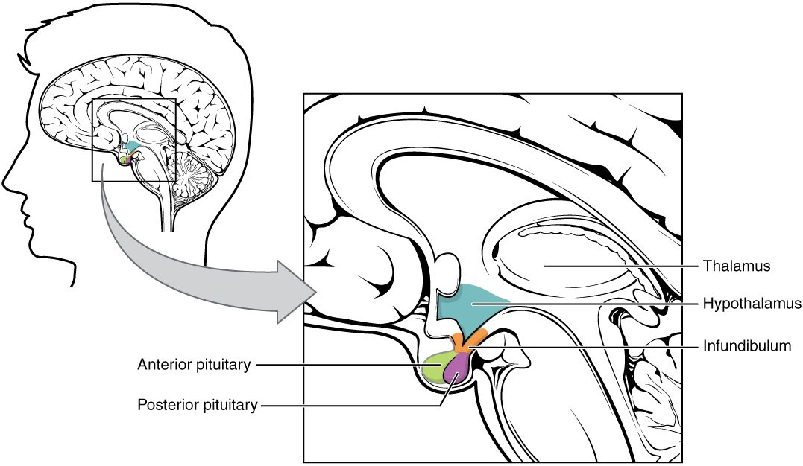

Hypothalamus and pituitary gland
The pituitary gland hangs from the hypothalamus by the infundibulum.
Part 1 · Clinical hook
Why this matters
Mr. Adeyemi, 42, visits his dentist because his lower teeth no longer meet his upper ones. His wedding ring stopped fitting years ago and his shoes keep getting bigger. A scan finds a benign tumor about a centimeter across in the pituitary gland, in a hollow of the skull just under his brain. It is releasing far too much growth hormone. One pea-sized gland, controlled by the hypothalamus above it, sets the level of hormones that act all over his body.
Part 2 · Foundations
What this builds on
Part 3 · Prerequisite check
Quick check before you start
1. Where is the hypothalamus?
- In the diencephalon, below the thalamus
- In the brainstem, below the pons
- In the cerebellum, behind the brainstem
Show the answer
The hypothalamus is part of the diencephalon, lying below the thalamus and forming the floor of the brain's center. The pituitary gland hangs from its underside.
- Correct: In the diencephalon, below the thalamus:
- In the brainstem, below the pons:
- In the cerebellum, behind the brainstem:
2. Which statement describes negative feedback?
- The response pushes the variable further from its set point
- The response reverses the change and returns the variable toward its set point
- The response has no effect on the variable
Show the answer
In negative feedback, the effector's response opposes the change that triggered it, bringing the variable back toward its set point.
- The response pushes the variable further from its set point:
- Correct: The response reverses the change and returns the variable toward its set point:
- The response has no effect on the variable:
3. What happens to a cell placed in a solution with a higher osmolarity than its cytoplasm?
- Water enters and the cell swells
- Water leaves and the cell shrinks
- Nothing: water does not cross membranes
Show the answer
Water moves toward the side with more dissolved solute. A more concentrated outside solution pulls water out of the cell, and it shrinks.
- Water enters and the cell swells:
- Correct: Water leaves and the cell shrinks:
- Nothing: water does not cross membranes:
Part 4 · Anatomy panel
Anatomy

With labels hidden, select a box to reveal its label.
Part 5 · Causal chain
How it works, step by step
- Salt absorbed from a salty meal raises plasma osmolarity.Osmoreceptors in the hypothalamus lose water, shrink and fire faster.
- The osmoreceptors excite the ADH-making neurons of the hypothalamus.Action potentials run down their axons through the infundibulum, and the axon terminals in the posterior pituitary release ADH into the blood.
- ADH binds receptor proteins on cells in the last stretch of the kidney's tubules.Through cAMP, the cells insert aquaporins into their membranes.
- More water moves out of the urine and back into the blood.Urine volume falls, and the kept water, together with water drunk in response to thirst, dilutes the plasma back toward its set point.
- Plasma osmolarity falls back to normal.The osmoreceptors fire less, and ADH release and thirst shut off: negative feedback.
Part 6 · Key ideas
Key ideas
- The anterior pituitary has no nerve link to the brain. The hypophyseal portal system joins it to the hypothalamus instead: blood passes through one capillary network in the hypothalamus, then through short portal veins down the infundibulum, then through a second capillary network in the anterior pituitary.
- The hypothalamic hormones carried through those portal veins are named for what they do. A releasing hormone makes anterior pituitary cells release a hormone, as thyrotropin-releasing hormone (TRH) does for TSH. An inhibiting hormone holds release back, as somatostatin does for growth hormone and dopamine does for prolactin.
- A tropic hormone (trop- = turning toward) has another endocrine gland as its target and makes that gland grow and release its own hormones. Thyroid-stimulating hormone (TSH) is one: it acts on the thyroid gland. The other anterior pituitary hormones are ACTH, FSH and LH, which are also tropic, plus prolactin and growth hormone, which act on ordinary tissues.
- Growth hormone (GH) is a protein hormone that drives growth of bone, muscle and other tissues, mostly through IGF-1 from the liver, and makes fat cells break down stored fat. Too much GH in childhood, while the epiphyseal plates are open, causes gigantism (gigant- = giant); after they close, it causes acromegaly, thickening of the hands, feet and jaw.
- The thirst center is a group of neurons in the hypothalamus that produce the conscious urge to drink. Osmoreceptors that sense rising plasma osmolarity excite it.
- Oxytocin (oxy- = quick, toc- = childbirth) is a peptide made by hypothalamic neurons and released from the posterior pituitary. It strengthens uterine contractions in labor through positive feedback, and it makes cells around the milk-filled sacs of the breast contract during nursing.
- Diabetes insipidus (insipidus = tasteless) is a lack of ADH or a failure of the kidneys to respond to it. The kidneys cannot keep water, so the person passes very large volumes of dilute urine and is constantly thirsty. Too much ADH (SIADH) does the opposite: urine is concentrated, and the plasma turns dilute with low sodium.
- In long-loop feedback, the final hormone of an axis, released by the target gland, travels back in the blood and inhibits both the hypothalamus and the anterior pituitary. It is the main brake on each axis.
Part 7 · Core concept
Core concepts
Part 8 · Misconception
A common mistake
The wrong idea: The pituitary gland is the master gland that runs the endocrine system on its own, and its posterior lobe makes ADH and oxytocin.
What actually happens: The hypothalamus controls the pituitary gland. It drives the anterior lobe with releasing and inhibiting hormones sent through the hypophyseal portal system, and its own neurons make ADH and oxytocin. The posterior lobe only stores those two hormones in axon terminals and releases them when the hypothalamic neurons fire. Feedback from the target glands then acts on both the hypothalamus and the pituitary.
Part 9 · Retrieval check
Check yourself
Anything you miss goes into your review queue.
1. After an injury, a patient's infundibulum is cut, so no blood flows from the hypothalamus to the anterior pituitary through the portal veins. Which anterior pituitary hormone rises?
- Prolactin
- Growth hormone
- TSH
- LH
Show the answer
Prolactin is held back mainly by dopamine from the hypothalamus. With the portal link cut, dopamine no longer reaches the anterior pituitary, so prolactin release rises. The other anterior pituitary hormones depend on releasing hormones and fall.
- Correct: Prolactin: Correct. Losing dopamine removes the brake on prolactin.
- Growth hormone: GH depends mainly on GHRH from the hypothalamus, so it falls when the portal link is cut.
- TSH: TSH depends on TRH, which can no longer reach the anterior pituitary, so it falls.
- LH: LH depends on GnRH, which can no longer reach the anterior pituitary, so it falls.
2. A 40-year-old woman notices her rings and shoes no longer fit, her jaw juts forward, and her glucose level in the blood is high. A benign pituitary tumor secreting growth hormone is found. Why has she not grown taller?
- Her epiphyseal plates have closed, so her bones cannot lengthen
- Growth hormone acts only on soft tissues in adults
- Her tumor makes IGF-1 instead of growth hormone
- High glucose in the blood blocks growth at the epiphyseal plates
Show the answer
This is acromegaly: excess GH after the epiphyseal plates have closed. Bones can still thicken, especially in the hands, feet, jaw and face, but they cannot grow longer. The same excess in childhood, with open plates, causes gigantism.
- Correct: Her epiphyseal plates have closed, so her bones cannot lengthen: Correct. Closed epiphyseal plates are why excess GH in adults thickens bones instead of lengthening them.
- Growth hormone acts only on soft tissues in adults: GH, through IGF-1, still acts on adult bone: that is why her jaw and hands have enlarged.
- Her tumor makes IGF-1 instead of growth hormone: The tumor is described as secreting growth hormone; IGF-1 comes from the liver and tissues in response to it.
- High glucose in the blood blocks growth at the epiphyseal plates: High glucose is a side effect of GH's action on fuel use, not the reason her height is unchanged.
3. A hiker runs out of water and walks for hours in dry heat, losing water in sweat. Predict the change in each variable, compared with before the hike.
| Variable | Change |
|---|---|
| Plasma osmolarity | — |
| Firing of hypothalamic osmoreceptors | — |
| ADH release | — |
| Urine volume | — |
| Thirst | — |
Show the answer
Water loss raises plasma osmolarity. Hypothalamic osmoreceptors respond by driving both ADH release, which saves water at the kidney, and thirst, which brings in more water. Both are negative feedback.
- Plasma osmolarity: up. Sweat is more dilute than plasma, so losing it leaves the remaining plasma more concentrated.
- Firing of hypothalamic osmoreceptors: up. Water leaves the osmoreceptors into the more concentrated plasma; they shrink, ion channels that open as the membrane slackens let positive ions in, and they fire faster.
- ADH release: up. Osmoreceptors excite the ADH-making neurons, so the posterior pituitary releases more ADH.
- Urine volume: down. ADH makes the kidney cells insert aquaporins, so more water is pulled back into the blood.
- Thirst: up. Osmoreceptors also excite the thirst center in the hypothalamus.
4. A man with a lung tumor is confused. His plasma sodium concentration is low and his plasma is dilute, yet his urine is concentrated. Which explains all of these findings?
- Central diabetes insipidus
- Excess growth hormone from the pituitary gland
- Too little oxytocin from the posterior pituitary
- Too much ADH release (SIADH)
Show the answer
In SIADH, ADH keeps being released even though the plasma is already dilute. The kidneys keep water, so the urine is concentrated and the plasma becomes dilute with a low sodium concentration. Water moves into brain cells, which swell, causing confusion.
- Central diabetes insipidus: Diabetes insipidus is the opposite: too little ADH effect, dilute urine and concentrated plasma.
- Excess growth hormone from the pituitary gland: Excess growth hormone thickens bones and raises the glucose in the blood; it does not concentrate the urine and dilute the plasma.
- Too little oxytocin from the posterior pituitary: Oxytocin acts on the uterus and breast. It does not control how much water the kidneys keep.
- Correct: Too much ADH release (SIADH): Correct. Too much ADH explains concentrated urine with dilute plasma.
5. A patient's blood shows a low level of the thyroid gland's hormones and a very high level of TSH. Where is the problem most likely to be?
- The hypothalamus, which is making too little TRH
- The anterior pituitary, which is making too little TSH
- The thyroid gland itself, which is failing to make its hormones
- The posterior pituitary, which stores TSH
Show the answer
If the thyroid gland fails, its hormones fall and long-loop negative feedback is lost. The hypothalamus and anterior pituitary then push harder, so TSH rises high. Low final hormone with high tropic hormone points to the target gland.
- The hypothalamus, which is making too little TRH: A shortage of TRH would lower TSH, not raise it.
- The anterior pituitary, which is making too little TSH: A failing anterior pituitary would make TSH low, not high.
- Correct: The thyroid gland itself, which is failing to make its hormones: Correct. The target gland is failing, and TSH is high because feedback has been removed.
- The posterior pituitary, which stores TSH: The posterior pituitary does not store TSH; it releases ADH and oxytocin.
6. Put the steps in order to show how the hypothalamus makes the anterior pituitary release a hormone.
- Hypothalamic neurons release a releasing hormone
- The releasing hormone enters the primary capillary plexus
- Hypophyseal portal veins carry it down the infundibulum
- It leaves the secondary capillary plexus in the anterior pituitary
- It binds receptor proteins on anterior pituitary cells
- Those cells release their hormone into the blood leaving the gland
Show the answer
Releasing hormones travel through the hypophyseal portal system: into the first network of capillaries, down the portal veins, out of the second network among the anterior pituitary cells, where they bind receptor proteins and trigger release of the pituitary hormone.
- Correct order: 1. Hypothalamic neurons release a releasing hormone 2. The releasing hormone enters the primary capillary plexus 3. Hypophyseal portal veins carry it down the infundibulum 4. It leaves the secondary capillary plexus in the anterior pituitary 5. It binds receptor proteins on anterior pituitary cells 6. Those cells release their hormone into the blood leaving the gland
7. Select every tropic hormone (a hormone whose target is another endocrine gland).
- TSH
- ACTH
- Prolactin
- FSH
- ADH
- LH
Show the answer
TSH, ACTH, FSH and LH each drive another endocrine gland: the thyroid gland, the adrenal gland's outer layer, and the gonads. Prolactin acts on the breast's milk-producing glands and ADH on the kidneys and blood vessels, which are not endocrine glands.
- Correct: TSH: Correct. TSH drives the thyroid gland.
- Correct: ACTH: Correct. ACTH drives the outer layer of the adrenal gland.
- Prolactin: Prolactin acts on the milk-producing glands of the breast, which are not endocrine glands.
- Correct: FSH: Correct. FSH drives the gonads.
- ADH: ADH acts on the kidneys and blood vessels, not on another endocrine gland.
- Correct: LH: Correct. LH drives the gonads.
Part 10 · Summary
Summary
The pituitary gland hangs from the hypothalamus by the infundibulum. The posterior pituitary is nervous tissue: hypothalamic neurons make ADH and oxytocin, send them down their axons and release them from terminals in the posterior lobe. The anterior pituitary is glandular: the hypothalamus controls it with releasing hormones (TRH, CRH, GnRH, GHRH) and inhibiting hormones (somatostatin, dopamine) carried through the hypophyseal portal system. It releases GH and the tropic hormones TSH, ACTH, FSH and LH, plus prolactin. GH drives growth mostly through IGF-1 and shifts fuel use toward fat. Osmoreceptors sense rising plasma osmolarity and drive thirst and ADH, which makes the kidneys keep water; oxytocin strengthens labor contractions by positive feedback and moves milk out of the breast. Each hypothalamic–pituitary axis is held steady by long-loop feedback from the target gland's hormone. Excess GH causes gigantism or acromegaly; too little ADH causes diabetes insipidus, and too much causes SIADH.
Part 11 · Up next
What comes next
Part 12 · Connections